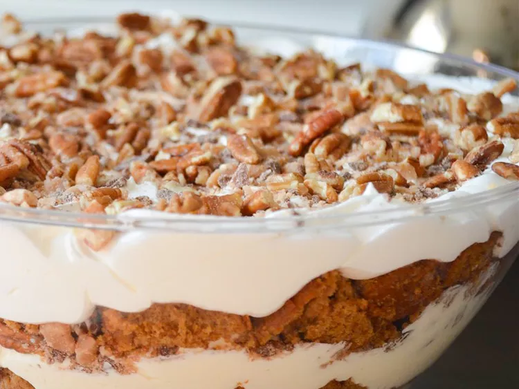

Easy Pumpkin Cream Trifle

Description
This is a very easy dessert for holidays, especially for those who really enjoy pumpkin.
although this recipe isn't a hard one, it takes aproximately 3 hours and 10 minutes to make this amazing dessert
Ingredients
- 1 (15.25 ounce) package spice cake mix
- 1 (3.4 ounce) package instant vanilla pudding
- 1 cup pumpkin puree
- ½ cup water
- ½ cup vegetable oil
- 3 eggs
- 2 teaspoons pumpkin pie spice
- 2 cups cold milk
- 2 (3.4 ounce) packages cheesecake flavor instant pudding and pie filling
- 2 cups whipped topping
- 1 cup chopped toasted pecans
- 1 cup English toffee bits
Steps
- Preheat oven to 350 degrees F (175 degrees C). Lightly grease a 9x13 baking dish.
- Combine the cake mix, vanilla pudding mix, pumpkin, water, oil, eggs, and pie spice in a large mixing bowl; pour into the prepared dish.
- Bake in the preheated oven for 45 to 50 minutes. Allow to cool to room temperature on a wire rack. Cut the cake into 1-inch cubes.
- Whisk together the milk and cheesecake pudding mix. Allow to set, about 2 minutes. Fold the whipped topping into the pudding mixture.
- Layer 1/3 of the cake cubes into the bottom of a large bowl; top with 1/3 of the cream mixture and sprinkle with 1/3 of the pecans and toffee bit. Repeat layering until all ingredients are uses. Refrigerate 1 hour before serving.